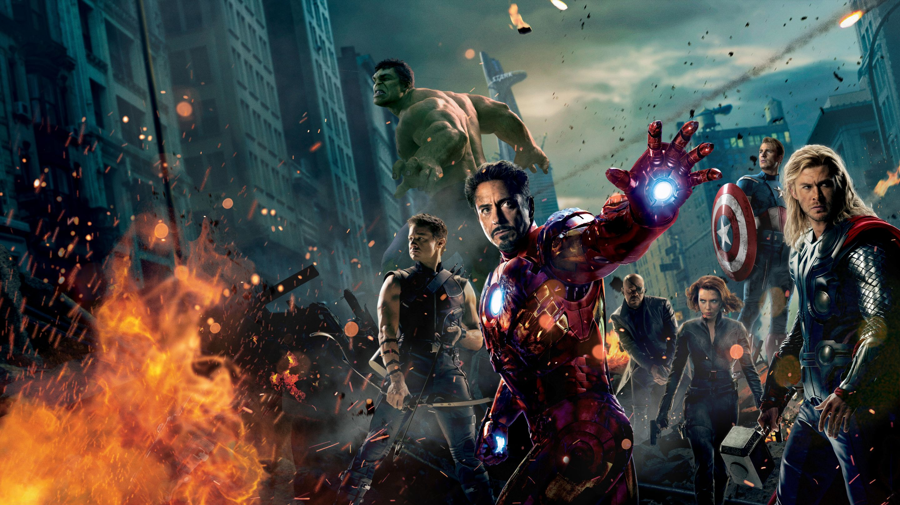
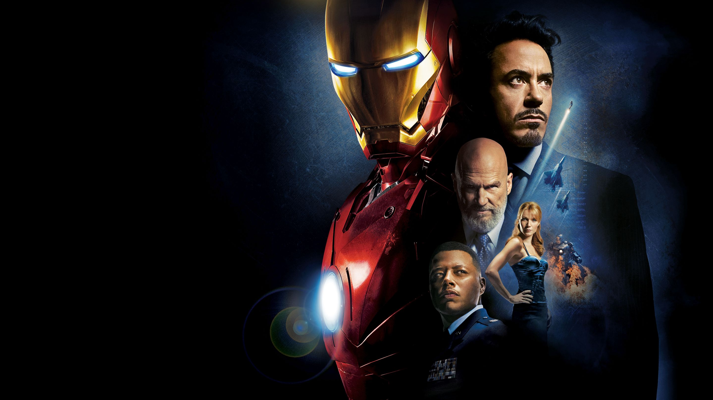

<!DOCTYPE html>
<html lang="en"></html>
<head>
    <meta charset="UTf-8">
    <meta hhtp-equiv="X-UA-Compatible" content="IE=edge">
    <meta name="viewport" content="width=device-width, initial-scale=1.0">
    <title>index.html</title>
    <link rel="stylesheet" href="css/stile.css">
    <link rel="preconnect" href="https://fonts.googleapis.com">
    <link rel="preconnect" href="https://fonts.gstatic.com" crossorigin>
    <link href="https://fonts.googleapis.com/css2?family=Days+One&display=swap" rel="stylesheet">

</head>

<body>
    <header>
        
        <hr class="linea2" color="(0, 0, 0, 0.20)" size="1px">
    </section>
        <div class="heroverse">
        
    </div>
    
    <hr color="(0, 0, 0, 0.20)" size="1px">

        <nav>
            <ul>
                
                <li ><a href="#">HOME</a></li>
                <div class="MCU">
                <li ><a href="index.html">MCU</a></li>
                </div>
                <li ><a href="index2.html">FUMETTI</a></li>
                <li ><a href="#">PERSONAGGI</a></li>
                <li ><a href="#">CHI SIAMO</a></li>
            </ul>
        </nav>
        
            <hr class="linea2" color="(0, 0, 0, 0.20)" size="1px">
        
    </header>
    <main>
        
        
       <section class="card">
        <h1 style="font-size:4vw;">MARVEL CINEMATIC UNIVERSE</h1>
        <section class="bottoni">
            <li style="font-size:1vw;" ><a href="index3.html">SAGA DELL'INFINITO</a></li>
            <li style="font-size:1vw;" ><a href="#">SAGA DEL MULTIVERSO</a></li>
            <li style="font-size:1vw;" ><a href="#">CROSSOVER</a></li>
        </section>
        <section class="card1">
            <p style="font-size:1vw;">L'MCU è noto per la sua trama interconnessa, in cui i film si collegano tra loro e condividono personaggi, trame e ambientazioni. Gli eroi principali includono Iron Man (interpretato da Robert Downey Jr.), Captain America (interpretato da Chris Evans), Thor (interpretato da Chris Hemsworth), Hulk (interpretato da Mark Ruffalo), Black Widow (interpretata da Scarlett Johansson) e molti altri. 


               <br><br><br> L'MCU ha abbracciato una vasta gamma di generi, combinando azione, avventura, fantascienza e commedia. I film dell'MCU spaziano dalle storie dei singoli eroi alle epiche battaglie contro cattivi di proporzioni cosmiche. Eventi come "Avengers: Endgame" e "Avengers: Infinity War" hanno riunito numerosi personaggi per affrontare minacce di livello intergalattico.</p>
            
        </section>
            <section class="card2">
                
                <p style="font-size:1vw;">Oltre ai film, si è espansa anche nel mondo delle serie televisive, con produzioni come "WandaVision", "The Falcon and The Winter Soldier" e "Loki". Queste serie sono strettamente collegate agli eventi dei film e approfondiscono ulteriormente la trama e lo sviluppo dei personaggi.</p>
            </section>
            <section class="card3">
                <p style="font-size:1vw;">Ha anche introdotto il concetto di "Fasi", che organizzano la narrazione dei film in gruppi tematici. Ogni fase conclude con un evento di grande portata. Ad esempio, la "Fase 1" ha portato all'unione degli Avengers, mentre la "Fase 3" ha concluso la saga dell'Infinity Stones con "Avengers: Endgame".</p>
                
            </section>
       </section>

    </main>
    <footer>
        <div class="heroverse2">
        
        </div>

        
        <nav>
            <ul>
               
        <li ><a href="#">CHI SIAMO</a></li>
        <li ><a href="#">CONTATTI</a></li>

       
            </ul>
        </nav>
        <div class="app">
        
        
        
        
        </div>
    </footer>